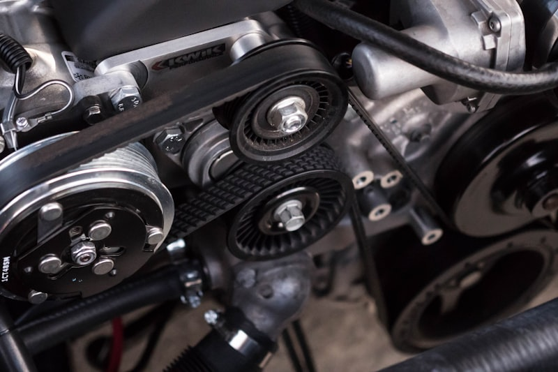

All Makes & Models — We Fix It All
From everyday commuters to specialty imports — every vehicle gets expert care at Cedar Automotive.
Your Car. Our Expertise. Any Make.
At Cedar Automotive, we don't turn vehicles away. Whether you drive a daily commuter, a work truck, a family SUV, or a weekend sports car — we have the tools, training, and diagnostic equipment to service it properly. Our shop handles everything from routine oil changes to complex engine rebuilds on virtually every make and model on the road today.
While we're known as Cedar Rapids' European vehicle specialists — with dealer-level diagnostic capability for BMW, Audi, Mercedes-Benz, Porsche, Volkswagen, and Volvo — we're equally skilled with domestic and Asian vehicles. Our professional scan tools cover every major manufacturer's proprietary systems, not just basic OBD-II codes. That means accurate diagnostics and proper repairs regardless of what badge is on your hood.
Don't see your vehicle listed on our featured makes pages? No problem. We work on everything from Mazda to MINI, Genesis to Jaguar, Land Rover to Mitsubishi, Saturn to Saab, and everything in between. If it has wheels and an engine (or an electric motor), bring it to Cedar Automotive.
Additional Makes We Service
- Mazda
- MINI Cooper
- Genesis
- Infiniti
- Jaguar
- Land Rover
- Lincoln
- Cadillac
- Chrysler
- Mitsubishi
- Fiat
- Alfa Romeo
- Saab
- Saturn
- Pontiac
- Mercury
- Scion
- Smart
- Tesla (non-battery)
- + Any other make

Why Bring Any Vehicle to Cedar Automotive?
Multi-Brand Diagnostics
Our professional scan tools communicate with every major manufacturer's proprietary systems — not just generic OBD-II. Accurate diagnostics mean correct repairs the first time.
One Fair Rate
Our labor rate is the same whether you drive a Honda Civic or a Porsche Cayenne. We never inflate pricing based on brand. Upfront estimates, always.
No Vehicle Turned Away
Domestic, import, new, old, common, or rare — we service it. If we can't source a part, we'll tell you upfront. No surprises, no runaround.
Frequently Asked Questions
Do you work on all car brands?
Yes. Cedar Automotive services every make and model — domestic brands like Ford, Chevy, and Dodge, imports like Toyota, Honda, and Nissan, and European vehicles like BMW, Audi, and Mercedes-Benz. If it has an engine, we can fix it.
Can you work on older or less common vehicles?
Absolutely. We service everything from classic cars and older trucks to newer models from brands like Genesis, Mazda, Mitsubishi, MINI, Fiat, Jaguar, Land Rover, and more. Our diagnostic equipment covers virtually every vehicle on the road.
Do you charge more for luxury or European vehicles?
Our labor rates are the same for every vehicle. Some European and luxury vehicles require specialty parts that cost more, but our labor is fair and transparent regardless of what you drive. We always provide an upfront estimate before starting work.
Do you program car keys and key fobs for any make?
Yes — we program car keys, key fobs, transponder keys, and proximity fobs for virtually every make and model. We specialize in European key programming (BMW, Audi, Mercedes, Volvo) that most locksmiths can't handle. We also handle all-keys-lost situations where every key has been lost. Call (319) 450-7584 for pricing.